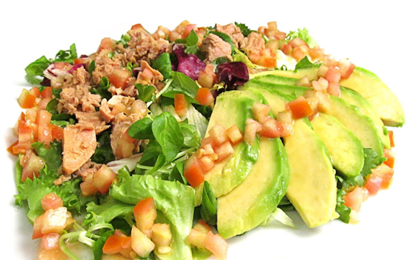

Recetas
Recetas
 Pollo
Pollo
 Pescado
Pescado
 Atun
Atun
 Veganas
Veganas
 Vegetarianas
Vegetarianas
 Quinoa
Quinoa

Ensalada de quinoa con verduras asadas
Una ensalada fresca y llena de proteínas gracias a la quinoa, acompañada de verduras asadas. Perfecta como plato principal o guarnición.
Dificultad
Facil

Personas
4

TOTAL
25MIN
Ingredientes:
- 1 taza de quinoa
- 1 calabacín, cortado en rodajas
- 1 pimiento rojo, cortado en tiras
- 1 zanahoria, pelada y cortada en rodajas
- 1 cucharada de aceite de oliva
- Sal y pimienta al gusto
- Jugo de 1 limón
- Hojas de menta o albahaca (opcional)
Información nutricional (aproximada por porción):
- Calorías: 300 kcal
- Proteínas: 10 g
- Grasas: 12 g
- Carbohidratos: 35 g
- Fibra: 6 g
A cocinar:
- Cocina la quinoa siguiendo las instrucciones del paquete. Generalmente, se cocina con 2 tazas de agua o caldo de verduras. Una vez lista, deja enfriar un poco.
- Precalienta el horno a 200°C (400°F). Coloca las verduras (calabacín, pimiento y zanahoria) en una bandeja para hornear y rocía con el aceite de oliva. Sazona con sal y pimienta.
- Asa las verduras en el horno durante 20-25 minutos, removiéndolas a mitad de tiempo, hasta que estén doradas y tiernas.
- En un tazón grande, mezcla la quinoa cocida con las verduras asadas, el jugo de limón y las hierbas frescas, si las deseas.
- Sirve fría o a temperatura ambiente.